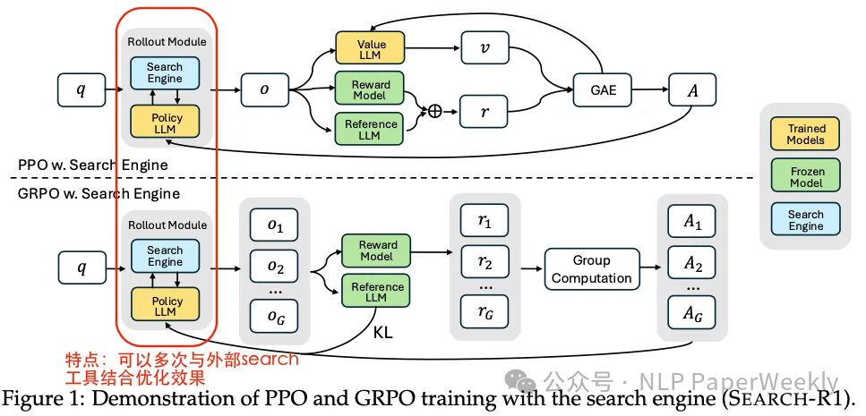
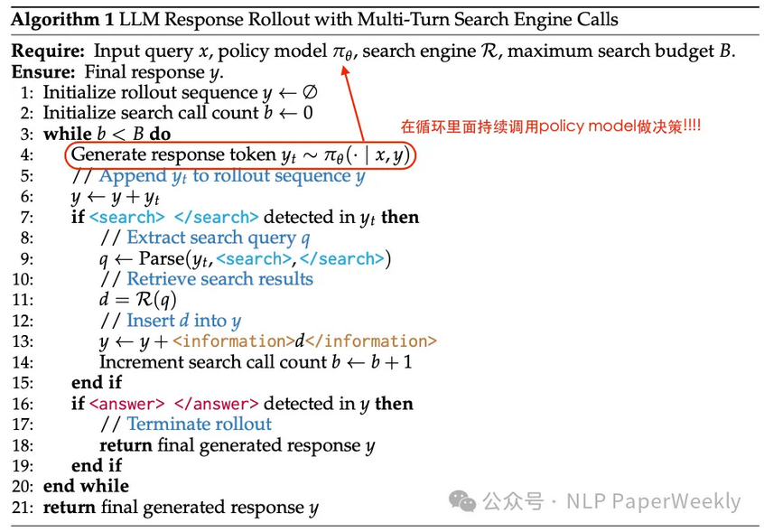
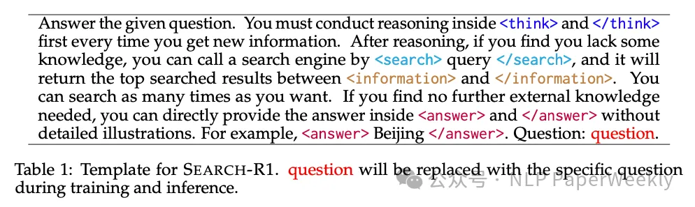
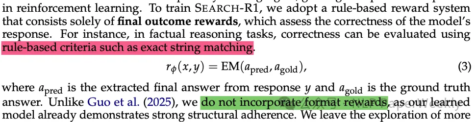

论文 #
- Search-R1: Training LLMs to Reason and Leverage Search Engines with Reinforcement Learning
- https://github.com/PeterGriffinJin/Search-R1
Methods #
详细方法和步骤:

- 将搜索引擎建模为环境的一部分： SEARCH-R1将搜索引起作为环境的一部分， 让模型与环境交互，从而得到 reward。

- 支持多轮检索和推理： SEARCH-R1通过特定的标签（
<search>,</search>,<information>,</information>,<think>,</think>,<answer>,</answer>）来支持多轮检索和推理。

- 优化算法兼容性： SEARCH-R1 与各种 RL 算法兼容，包括 PPO 和 GRPO。
- 简单结果奖励函数： 避免复杂的基于过程的奖励, 采用简单的基于结果的奖励函数 （字符串匹配作为reward!!!）。

总结 #
结论1: SEARCH-R1 显著提升了LLM在需要实时外部知识的复杂推理任务中的能力。 通过强化学习，LLM可以自主生成查询并有效利用检索到的信息，优于传统的RAG方法。
结论2: SEARCH-R1在不同LLM架构和训练方法上具有广泛的适用性。 实验结果表明，无论使用基础模型还是指令调整模型，SEARCH-R1都能带来显著的性能提升，且对不同的RL算法（如PPO和GRPO）具有兼容性。
结论3: SEARCH-R1有很强的实用价值。 SEARCH-R1能够显著提高LLM在需要实时外部知识的复杂推理任务中的能力。 可以用于智能问答，智能助手等领域。
参考 #
1xx. 【论文解读】Search-R1：强化学习如何教会 LLM 自主搜索？
1xx. 有个学术的会议